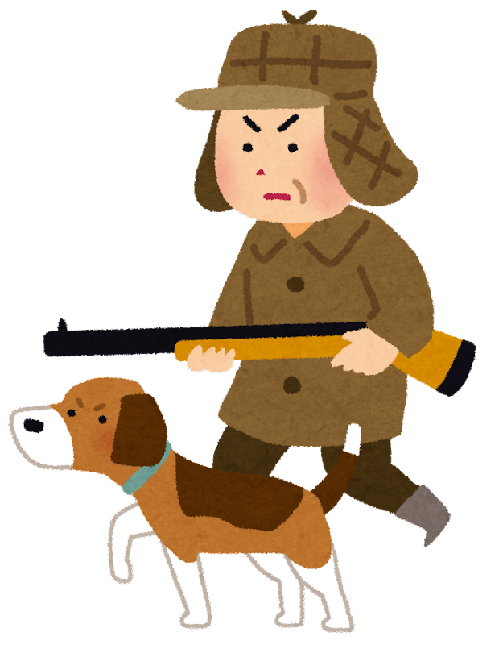
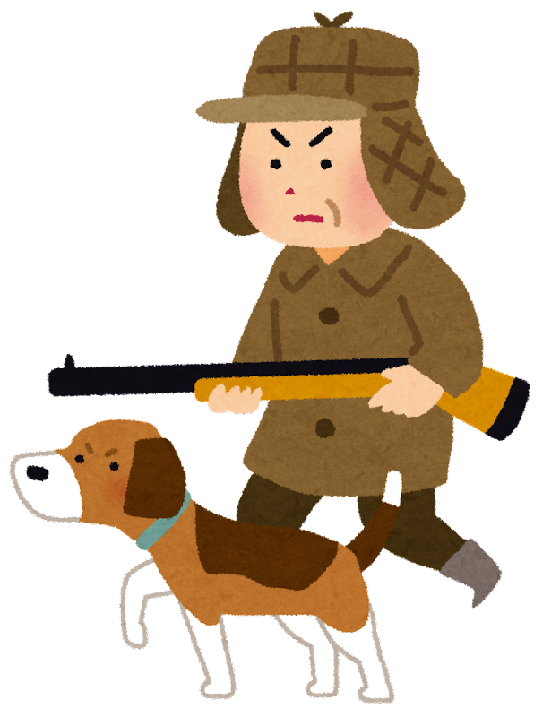

Credits: https://www.irasutoya.com/
How to play: fox is shot by a hunter with a gun,
the hunter does not raise his head to Shoya(village head),
and Shoya(village head) is turned into a fox.
History: Sansukumi-ken (三すくみ拳) is a category of East Asian hand games played by using three hand gestures.
Ken games went into a period of decline in Japan after World War II.
One of the few surviving sansukumi-ken games is jan-ken, which was brought to the West in the 20th century as rock paper scissors.
The most popular sansukumi-ken game in Japan was kitsune-ken (狐拳), also known as tōhachiken (東八拳).
In the game, a supernatural fox called a kitsune (狐) defeats the village head, the village head (庄屋) defeats the hunter, and the hunter (猟師) defeats the fox.
A distinct feature of kitsune-ken is that the game is played by making gestures with both hands.
 
